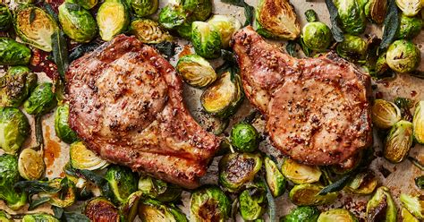

Pork Chops with Chopped Brussels Sprouts

Description
This recipe is one of our family's favorites. Bone-in pork chops have great flavor and taste amazing with chopped brussels sprouts.
Ingredients
Note: Organic ingredients used if available
- 2 - 0.5 lb bone-in pork chops
- 20-30 medium brussels sprouts
- 2 tbs. ghee
- 2 tsp. garlic powder
- 2 tsp. italian seasoning (oregano, thyme, sage)
- 1 tsp. salt
- 1 tsp. pepper
Steps
- Chop brussels sprouts. I highly recommend using a food processor for this step.
- Heat pan to medium low heat.
- Season pork chops by sprinkling garlic powder, italian seasoning, salt, and pepper on all sides of each chop.
- Tenderize pork chops with a fork, pushing the seasoning into the pork chop.
- Add 1 tbs. of ghee to pan followed by the pork chops once ghee is fully melted.
- Cook pork chops, flipping every 2-5 minutes, until a minimum internal temperature of 165 degrees Fahrenheit is reached.
- Remove pork chops from pan and add chopped brussels sprouts to pan with 1 tbs. of ghee.
- Cook brussels sprouts 5-7 minutes, or until your desired tenderness. We like ours slighly crunchy.
Enjoy!
This recipe will make approximately two servings.
My goal when creating this recipe was to keep stories and comments to a minimum up front, provide a brief description, then get to the recipe.